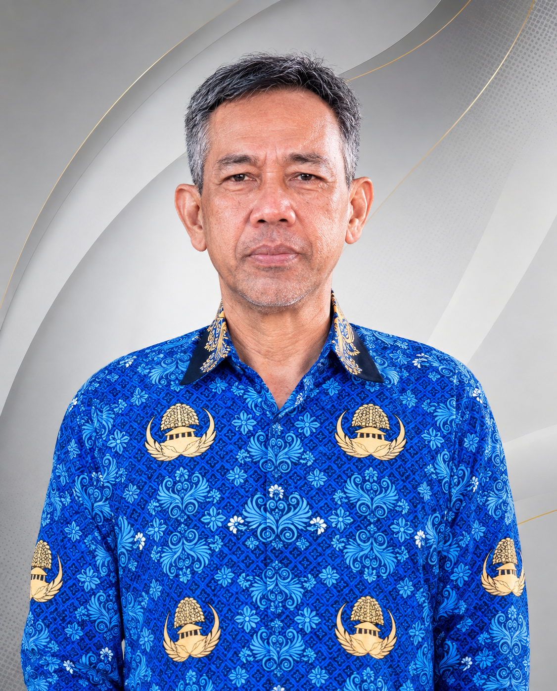

Kepala Sekolah

HAMDANI, S.Pd.
Kepala Sekolah SMP Negeri 30 OKU
Wakil Kepala Sekolah & Bidang

M. ANSORI, S.Ag.
Wakil Kepala Sekolah

WINDA MUSTIKA SARI, S.Pd.
Waka Bidang Kurikulum
RIKI YA'CUB, S.Pd.
Waka Bidang Kesiswaan
MUHLIS SAPUTRA, S.Kom.
Waka Bidang Sarpras
Dewan Guru (16 Tenaga Pendidik)
ERMADI, S.Pd.
Guru Mata Pelajaran
M. ANSORI, S.Ag.
Guru Mata Pelajaran
TRI MARLIANSARI, S.Pd.
Guru Mata Pelajaran
ARYA GUSTARANDY, S.Pd.
Guru Mata Pelajaran
MAKRUF ANSORI, S.Pd.
Guru Mata Pelajaran
WINDA MUSTIKA SARI, S.Pd.
Guru Mata Pelajaran
MINARTI, S.Pd.I.
Guru Mata Pelajaran
RIKI YA'CUB, S.Pd.
Guru Mata Pelajaran
IDA ROYANI, S.Pd.
Guru Mata Pelajaran
MUHLIS SAPUTRA, S.Kom.
Guru Mata Pelajaran
LUSIA TANTRI, S.Pd.
Guru Mata Pelajaran
ENDANG MEISARI, S.Pd.
Guru Mata Pelajaran
IWAN PALES, S.Pd.
Guru Mata Pelajaran
LILIS SURYANI, S.Pd.
Guru Mata Pelajaran
RIKA OKTIANI, S.Pd.
Guru Mata Pelajaran
ITA APRILIANTS, S.Pd.
Guru Mata Pelajaran
Tugas Tambahan & Staf Kependidikan
| Kategori Tugas | Sub Bidang / Kelas | Nama Penanggung Jawab |
|---|---|---|
| Tata Usaha (TU) | Staf Administrasi 1 | ANNISA EGA DAYANA |
| Staf Administrasi 2 | APRI AL FARIZI | |
| Wali Kelas | Kelas VII | TRI MARLIANSARI, S.Pd. |
| Kelas VIII | RIKI YA'CUB, S.Pd. | |
| Kelas IX | MAKRUF ANSORI, S.Pd. | |
| Pembina Kegiatan | Perpustakaan | ERMADI, S.Pd. |
| Laboratorium | ARYA GUSTARANDY, S.Pd. | |
| OSIS | RIKI YA'CUB, S.Pd. | |
| Pramuka | ANNISA EGA DAYANA | |
| Rohis | MINARTI, S.Pd.I. | |
| 9 K | LUSIA TANTRI, S.Pd. | |
| Komite Sekolah | Ketua Komite | LENI PUSPITARIA |
| Penjaga Sekolah | Keamanan & Kebersihan | ARLIUS |